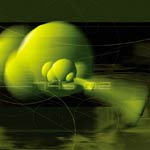

WidgetWerks Inc. was formed as part of a consumer conspiracy back in 1973. No one really knew what the company did back then but gosh darn it, we had a lot of fun. Based in a secret enclave, whereabouts unknown, we wondered if passive anarchy might prove to be counterproductive; so in 1975, we decided to start making stuff.
Now, WidgetWerks Inc. is North America's largest distributor of little black doohickeys (LBDs) and chrome-plated thingamajigs (C-PTs). We pride ourselves on our attention to detail and our superior customer service, and this web site is an extension of our belief in the truism that states "there's one born every minute."
Over its thirty year history, WidgetWerks Inc. has come to recognize that the world changes. We embrace change, and in recent years we have purchased a fax machine, a Rolodex and even a postal meter. We believe our production line and operational system is second to none, and we are constantly on the lookout for new ways to innovate.
In 1992, we expanded operations to include the manufacture of bright orange squishy things (BOSTs), addressing a market need that was clearly underrepresented. Thanks to our technological evolution, we have remained leaders in this field, and we are planning vertical integration into BOST maintenance later this year.
In 1980-81, WidgetWerks Inc. realized that in order to be successful, we needed to find someone who could actually do the work. By establishing a solid base of core professionals, we could plan corporate takeovers, mergers and slumber parties, resulting in the establishment of a giant multinational conglomerate. As these professionals slaved away, the principals of WidgetWerks Inc. were able to focus on what they were really good at: producing wild-eyed theories of economic dominance and consuming mass quantities of daiquiris.
We established a network of companies to produce our products (except for the orange squishy things...that's all ours) and have remained in contact ever since. They tell us things are going well.
Learn more about our partners.
Web site designed by the Fantasy Division of runwithscissors Design
Copyleft 1999-2019 WidgetWerks Inc. All rights reserved.
[Top]